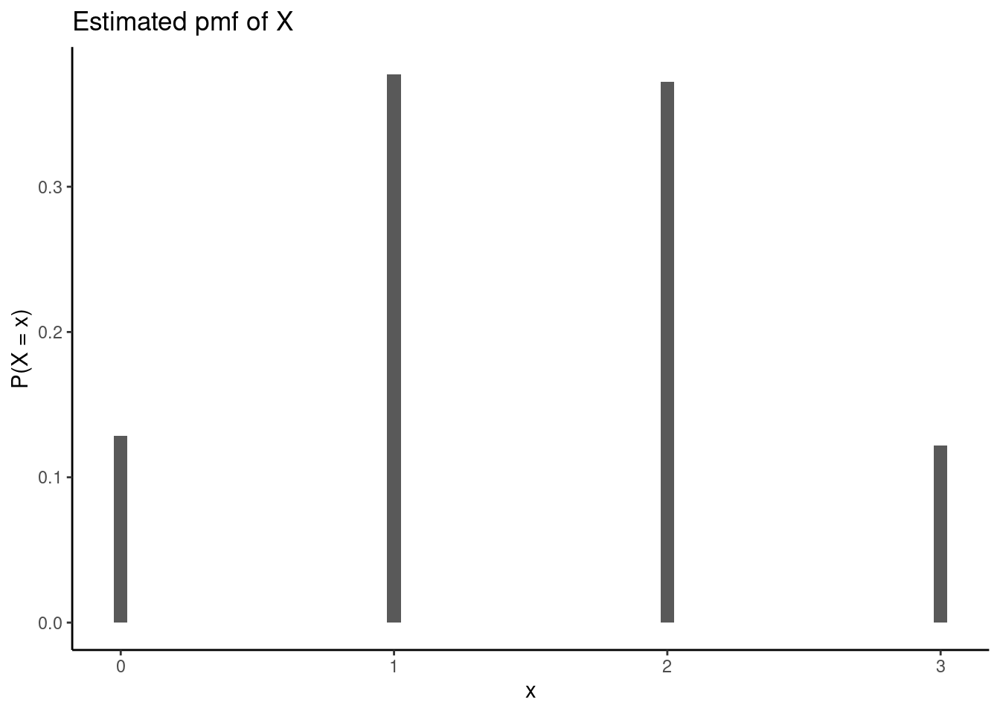
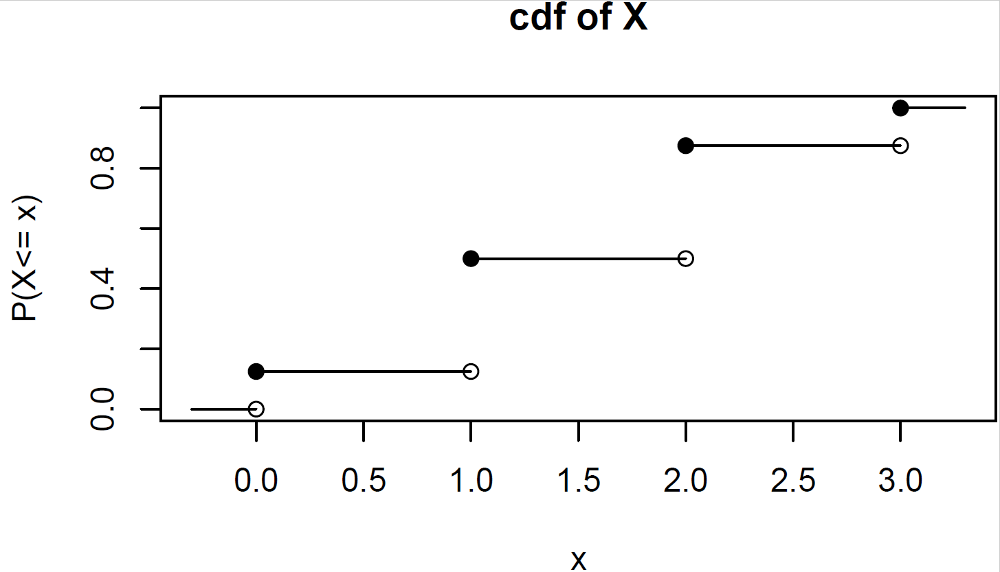

10 Discrete Random Variables
10.1 Objectives
Differentiate between various statistical terminologies such as random variable, discrete random variable, continuous random variable, sample space/support, probability mass function, cumulative distribution function, moment, expectation, mean, and variance, and construct examples to demonstrate their proper use in context.
For a given discrete random variable, derive and interpret the probability mass function (pmf) and apply this function to calculate the probabilities of various events.
Simulate random variables for a discrete distribution using
R.Calculate and interpret the moments, such as expected value/mean and variance, of a discrete random variable.
Calculate and interpret the expected value/mean and variance of a linear transformation of a random variable.
10.2 Random variables
We have already discussed random experiments. We have also discussed \(S\), the sample space for an experiment. A random variable essentially maps the events in the sample space to the real number line. For a formal definition: A random variable \(X\) is a function \(X: S\rightarrow \mathbb{R}\) that assigns exactly one number to each outcome in an experiment.
Example:
Suppose you flip a coin three times. The sample space, \(S\), of this experiment is \[ S=\{\mbox{HHH}, \mbox{HHT}, \mbox{HTH}, \mbox{HTT}, \mbox{THH}, \mbox{THT}, \mbox{TTH}, \mbox{TTT}\} \]Let the random variable \(X\) be the number of heads in three coin flips.
Whenever introduced to a new random variable, we should take a moment to think about what possible values \(X\) can take. When flipping a coin three times, we can get zero, one, two, or three heads. The random variable \(X\) assigns each outcome in our experiment to one of these values. We can visualize the possible outcomes and possible values of \(X\): \[ S=\{\underbrace{\mbox{HHH}}_{X=3}, \underbrace{\mbox{HHT}}_{X=2}, \underbrace{\mbox{HTH}}_{X=2}, \underbrace{\mbox{HTT}}_{X=1}, \underbrace{\mbox{THH}}_{X=2}, \underbrace{\mbox{THT}}_{X=1}, \underbrace{\mbox{TTH}}_{X=1}, \underbrace{\mbox{TTT}}_{X=0}\} \]
The sample space of \(X\) is the list of numerical values that \(X\) can take: \[ S_X=\{0,1,2,3\} \]
Because the sample space of \(X\) is a countable list of numbers, we consider \(X\) to be a discrete random variable (more on that later).
Question:
What are some other examples of random variables for this coin flip experiment? What are some counterexamples?1
10.2.1 How does this help?
Sticking with our example, we can now frame a problem of interest in the context of our random variable \(X\). For example, suppose we wanted to know the probability of at least two heads. Without our random variable, we have to write this as: \[ \mbox{P}(\mbox{at least two heads})= \mbox{P}(\{\mbox{HHH},\mbox{HHT},\mbox{HTH},\mbox{THH}\}) \]
In the context of our random variable, this simply becomes \(\mbox{P}(X\geq 2)\). It may not seem important in a case like this, but imagine if we were flipping a coin 50 times and wanted to know the probability of obtaining at least 30 heads. It would not be feasible to write out all possible ways to obtain at least 30 heads. It is much easier to write \(\mbox{P}(X\geq 30)\) and then explore the distribution of \(X\).
Essentially, a random variable often helps us reduce a complex random experiment to a simple variable that is easy to characterize.
10.2.2 Discrete versus continuous random variables
A discrete random variable has a sample space that consists of a countable set of values. \(X\) in our example above is a discrete random variable. Note that “countable” does not necessarily mean “finite”. For example, a random variable with a Poisson distribution (a topic for a later chapter) has a sample space of \(\{0,1,2,...\}\). This sample space is unbounded, but it is considered countably infinite, and thus the random variable would be considered discrete.
A continuous random variable has a sample space that is a continuous interval. For example, let \(Y\) be the random variable corresponding to the height of a randomly selected individual. \(Y\) is a continuous random variable because a person could measure 68.1 inches, 68.2 inches, or perhaps any value in between. Note that when we measure height, our precision is limited by our measuring device, so we are technically “discretizing” height. However, even in these cases, we typically consider height to be a continuous random variable.
A mixed random variable is exactly what it sounds like. It has a sample space that is both discrete and continuous. How could such a thing occur? Consider an experiment where a person rolls a standard six-sided die. If it lands on anything other than one, the result of the die roll is recorded. If it lands on one, the person spins a wheel, and the angle in degrees of the resulting spin, divided by 360, is recorded. If our random variable \(Z\) is the number that is recorded in this experiment, the sample space of \(Z\) is \([0,1] \cup \{2,3,4,5,6\}\). We will not be spending much time on mixed random variables in this course. However, they do occur in practice. Consider the job of analyzing bomb error data. If the bomb hits within a certain radius, the error is 0. Otherwise, the error is measured in a radial direction. This is a mixed random variable.
10.2.3 Discrete distribution functions
Now that we have defined a random variable, we need a way to describe its behavior. We will use probabilities for this purpose.
Distribution functions describe the behavior of random variables. We can use these functions to determine the probability that a random variable takes a value or range of values. For discrete random variables, there are two distribution functions of interest: the probability mass function (pmf) and the cumulative distribution function (cdf).
10.2.4 Probability mass function
Let \(X\) be a discrete random variable. The probability mass function (pmf) of \(X\), given by \(f_X(x)\), is a function that assigns probability to each possible outcome of \(X\). \[ f_X(x)=\mbox{P}(X=x) \]
Note that the pmf is a function. Functions have input and output. The input of a pmf is any real number. The output of a pmf is the probability that the random variable takes the inputted value. The pmf must follow the axioms of probability described in the Chapter 8. Primarily,
For all \(x \in \mathbb{R}\), \(0 \leq f_X(x) \leq 1\). That is, for all values of \(x\), the outcome of \(f_X(x)\) is between 0 and 1.
\(\sum_x f_X(x) = 1\), where the \(x\) in the index of the sum simply denotes that we are summing across the entire sample space of \(X\). In words, all the probabilities must sum to one.
Example:
Recall our coin flip example again. We flip a coin three times. Let \(X\) be the number of heads. We know that \(X\) can only take values 0, 1, 2 or 3. But at what probability does it take these three values? We previously listed out the possible outcomes of the experiment and denoted the value of \(X\) corresponding to each outcome. \[ S=\{\underbrace{\mbox{HHH}}_{X=3}, \underbrace{\mbox{HHT}}_{X=2}, \underbrace{\mbox{HTH}}_{X=2}, \underbrace{\mbox{HTT}}_{X=1}, \underbrace{\mbox{THH}}_{X=2}, \underbrace{\mbox{THT}}_{X=1}, \underbrace{\mbox{TTH}}_{X=1}, \underbrace{\mbox{TTT}}_{X=0}\} \]
Each of these eight outcomes is equally likely (each with a probability of \(\frac{1}{8}\)). Thus, building the pmf of \(X\) becomes a matter of counting the number of outcomes associated with each possible value of \(X\): \[ f_X(x)=\left\{ \renewcommand{\arraystretch}{1.4} \begin{array}{ll} \frac{1}{8}, & x=0 \\ \frac{3}{8}, & x=1 \\ \frac{3}{8}, & x=2 \\ \frac{1}{8}, & x=3 \\ 0, & \mbox{otherwise} \end{array} \right . \]
Note that this function specifies the probability that \(X\) takes any of the four values in the sample space (0, 1, 2, and 3). It also specifies that the probability \(X\) takes any other value is 0.
Graphically, the pmf is not terribly interesting. The pmf is 0 at all values of \(X\) except for 0, 1, 2 and 3, Figure 10.1 .
Example:
We can use a pmf to answer questions about an experiment. For example, consider the same coin flip context. What is the probability that we flip at least one head? We can write this in the context of \(X\): \[ \mbox{P}(\mbox{at least one head})=\mbox{P}(X\geq 1)=\mbox{P}(X=1)+\mbox{P}(X=2)+\mbox{P}(X=3) \] \[=\frac{3}{8} + \frac{3}{8}+\frac{1}{8}=\frac{7}{8} \]Alternatively, we can recognize that \(\mbox{P}(X\geq 1)=1-\mbox{P}(X=0)=1-\frac{1}{8}=\frac{7}{8}\).
10.2.5 Cumulative distribution function
Let \(X\) be a discrete random variable. The cumulative distribution function (cdf) of \(X\), given by \(F_X(x)\), is a function2 that assigns to each value of \(X\) the probability that \(X\) takes that value or lower: \[ F_X(x)=\mbox{P}(X\leq x) \]
If we know the pmf, we can obtain the cdf: \[ F_X(x)=\mbox{P}(X\leq x)=\sum_{y\leq x} f_X(y) \]
The main idea behind the cdf is a summation of probabilities of interest. In this course, we de-emphasize the derivation of and symbolic notation for the cdf. We instead focus on using the idea of a cdf to calculate probabilities.
Example:
Find the following probabilities for the coin flip example: \(P(X\leq 2)\), \(P(X < 1)\), and \(P(1\leq X < 3)\).The easiest way to find these probabilities is by summing the probabilities of interest.
\[ P(X\leq 2) = P(X=0) + P(X=1) + P(X=2) = \frac{1}{8} + \frac{3}{8} + \frac{3}{8} = \frac{7}{8} \]
\[ P(X < 1) = P(X = 0) = \frac{1}{8} \]
\[ P(1\leq X < 3) = P(X=1) + P(X=2) = \frac{3}{8} + \frac{3}{8} = \frac{6}{8}\quad\text{or}\quad \frac{3}{4} \]
We could also find these probabilities using the symbolic form of the cdf,3 but the method shown above is much more intuitive. Instead of worrying about the signs (e.g., \(\leq\) versus \(<\)) in the probability statements and what that means for utilizing the cdf, we can simply use the pmf and sum the appropriate probabilities.
10.2.6 Simulating random variables
We can get an estimate of the distribution of a random variable via simulation.
Example:
Simulate a random variable for the number of heads in flipping a coin three times.
We can use the rflip() function to simulate coin tosses.4 Remember to ask yourself, what do we want R to do and what does R need to do that? We can use ? or help() to access the documentation for the rflip() function. We need to provide n, the number of coins to toss, and prob, the probability of heads on each toss. There are other optional arguments we can provide as well if desired.
Let’s do one simulation, flipping a coin three times.
set.seed(1)
rflip(n = 3, prob = 0.5)
Flipping 3 coins [ Prob(Heads) = 0.5 ] ...
T T H
Number of Heads: 1 [Proportion Heads: 0.333333333333333]Now we need to do this many times. We can use the do() function to help us repeat the process of flipping three coins.
set.seed(1)
results <- do(10000)*rflip(n = 3, prob = 0.5)
head(results) n heads tails prop
1 3 2 1 0.6666667
2 3 3 0 1.0000000
3 3 0 3 0.0000000
4 3 2 1 0.6666667
5 3 2 1 0.6666667
6 3 2 1 0.6666667Each row of our results represents one of the 10,000 simulations, containing the number of flips, the number of heads, the number of tails, and the probability of heads. We can now plot the estimated distribution of \(X\), the number of heads in flipping a coin three times, using the heads column from our results. We use gf_props() to display the proportion (out of 10,000 simulations) of each outcome (0, 1, 2, or 3 heads).

We can also calculate probabilities like \(P(\text{at least one head})\) via simulation by simply counting up how many times, out of 10,000 simulations, we flipped at least one head.
results %>%
summarize(Prob = count(heads >= 1) / 10000) Prob
1 0.8716We see the estimated probability is very close to the exact value of \(\frac{7}{8} = 0.875\) found earlier.
An alternative method for this simulation uses the inverse transform method, which requires deriving the cdf and utilizing the inverse transform method.5 Because we have de-emphasized the cdf in this book, we’ll focus on simulating the pmf directly whenever possible.
10.3 Moments
Distribution functions are excellent characterizations of random variables. The pmf and cdf will tell you exactly how often the random variable takes particular values. However, distribution functions are often a lot of information. Sometimes, we may want to describe a random variable \(X\) with a single value or small set of values. For example, we may want to know some measure of center of \(X\). We also may want to know a measure of spread of \(X\). Moments are values that summarize random variables with single numbers. Since we are dealing with the population, these moments are population values and not summary statistics as we used in the first block of material.
10.3.1 Expectation
At this point, we should define the term expectation. Let \(g(X)\) be some function of a discrete random variable \(X\). The expected value of \(g(X)\) is given by: \[ \mbox{E}(g(X))=\sum_x g(x) \cdot f_X(x) \]
Note that \(g(X)\) can be almost any function of \(X\), such as \(X - 3\) or \(X^2\).
10.3.2 Mean
The most common moments used to describe random variables are mean and variance. The mean (often referred to as the expected value of \(X\)), is simply the average value of a random variable. It is denoted as \(\mu_X\) or \(\mbox{E}(X)\). In the discrete case, the mean is found by: \[ \mu_X=\mbox{E}(X)=\sum_x x \cdot f_X(x) \]
We are using \(\mu\) because it is a population parameter. The mean is also known as the first moment of \(X\) around the origin. It is a weighted sum with the weight being the probability of each outcome.
Example:
Find the expected value (or mean) of \(X\): the number of heads in three flips of a fair coin. \[ \mbox{E}(X)=\sum_x x\cdot f_X(x) = 0*\frac{1}{8} + 1*\frac{3}{8} + 2*\frac{3}{8} + 3*\frac{1}{8}=1.5 \]
From our simulation before, we can find the mean as an estimate of the expected value. This is really a statistic since we simulated data from the population and thus, will have variance from sample to sample.
mean(~heads, data = results)[1] 1.4878Our estimate is pretty close to the exact value found mathematically.
10.3.3 Variance
Variance is a measure of the spread of a random variable. The variance of \(X\) is denoted as \(\sigma^2_X\) or \(\mbox{Var}(X)\). It is equivalent to the average squared deviation from the mean: \[ \sigma^2_X=\mbox{Var}(X)=\mbox{E}[(X-\mu_X)^2] \]
In the discrete case, this can be evaluated by: \[ \mbox{E}[(X-\mu_X)^2]=\sum_x (x-\mu_X)^2f_X(x) \]
Variance is known as the second moment of \(X\) around the mean. It can also be shown6 that
\[ \mbox{Var}(X) = E(X^2) - \big[E(X)\big]^2 \]
The square root of \(\mbox{Var}(X)\) is denoted as \(\sigma_X\), the standard deviation of \(X\). The standard deviation is often reported because it is measured in the same units as \(X\), while the variance is measured in squared units and is thus harder to interpret.
Example:
Find the variance of \(X\): the number of heads in three flips of a fair coin.
\[ \mbox{Var}(X)=\sum_x (x-\mu_X)^2 \cdot f_X(x) \]
\[
= (0-1.5)^2 \times \frac{1}{8} + (1-1.5)^2 \times \frac{3}{8}+(2-1.5)^2 \times \frac{3}{8} + (3-1.5)^2\times \frac{1}{8}
\] In R this is:
(0-1.5)^2*1/8 + (1-1.5)^2*3/8 + (2-1.5)^2*3/8 + (3-1.5)^2*1/8[1] 0.75The variance of \(X\) is 0.75.
We can find the variance of the simulation too, but the var() function in R calculates the sample variance. To find the population variance, we need to multiply by \(\frac{n-1}{n}\).
var(~heads, data = results)*(10000 - 1) / 10000[1] 0.7504512Again, our simulated results are very similar to the exact value found mathematically.
10.3.4 Mean and variance of Linear Transformations
Lemma: Let \(X\) be a discrete random variable, and let \(a\) and \(b\) be constants. Then: \[ \mbox{E}(aX+b)=a\mbox{E}(X)+b \] and \[ \mbox{Var}(aX+b)=a^2\mbox{Var}(X) \]
The proof of this lemma is left to the reader.
Example:
Consider our coin flip example with \(X\) as the number of heads in three coin flips. Find \(E(2X + 3)\) and \(\mbox{Var}(2X + 3)\).
Using the lemma above, we find
\[ E(2X + 3) = 2E(X) + 3 = 2\times(1.5) + 3 = 6 \]
\[ \mbox{Var}(2X + 3) = 2^2\mbox{Var}(X) = 4\times (0.75) = 3 \]
We can also use our simulation:
results %>%
mutate(gx = 2*heads + 3) %>%
summarize(mean = mean(gx), var = var(gx)*(10000 - 1)/10000) mean var
1 5.9756 3.001805Remember, a random variable must assign each outcome in the experiment to exactly one number. Other examples of random variables when flipping a coin three times are 1) the number of tails in three coin flips, 2) the number of times the result changes (from heads to tails, or from tails to heads), 3) the position of the first head (i.e., does the first head occur on the first, second, or third coin flip?), or 4) the longest run of consecutive heads. Can you think of other examples?
Some counterexamples (or non-examples) of a random variable for this experiment are 1) whether the coin flip results in heads or tails, and 2) the position of each head in the three flips. Because the first example does not map the possible outcomes to a single number, this is not a random variable. The second is also not a random variable because it maps the possible outcomes to multiple numbers (e.g., if a head occurs on the first and third flip ,the result would be 1 and 3).↩︎
Again, note that the cdf is a function with an input and output. The input of a cdf is any real number. The output of a cdf is the probability that the random variable takes the inputted value or less.
Like the pmf, the value of the cdf must be between 0 and 1. Also, since the pmf is always non-negative, the cdf must be non-decreasing.↩︎
Obtain and plot the cdf of \(X\) from the previous example. \[ F_X(x)=\mbox{P}(X\leq x)=\left\{\renewcommand{\arraystretch}{1.4} \begin{array}{ll} 0, & x <0 \\ \frac{1}{8}, & 0\leq x < 1 \\ \frac{4}{8}, & 1\leq x < 2 \\ \frac{7}{8}, & 2\leq x < 3 \\ 1, & x\geq 3 \end{array}\right . \]
Visually, the cdf of a discrete random variable has a stair-step appearance. In this example, the cdf takes a value 0 up until \(X=0\), at which point the cdf increases to 1/8. It stays at this value until \(X=1\), and so on. At and beyond \(X=3\), the cdf is equal to 1.
↩︎
Cumulative distribution function of X from the coin flip example. We could also simulate flipping a coin three times by sampling from a vector such as
c("H", "T"). We would sample with replacement (since we can get heads or tails for each coin flip) three times, and repeat this process many times.↩︎Since the range of the cdf is in the interval \([0,1]\) we will generate a random number in that same interval and then use the inverse function to find the value of the random variable. The pseudo code is:
Generate a random number, \(U\).
Find the index \(k\) such that \(\sum_{j=1}^{k-1}f_X(x_{j}) \leq U < \sum_{j=1}^{k}f_X(x_{j})\) or \(F_x(k-1) \leq U < F_{x}(k)\).
In
R, we generate the pmf and cdf as vectors. We then generate a random number between 0 and 1. Next, we use the random number to find the value of the random variable as described above. We do this 10,000 (or some other large number) times and plot the estimated pmf.↩︎Show that \(\mbox{Var}(X)\) is equal to \(E(X^2) - [E(X)]^2\).
$$ (X) = E= E= E(X^2) - E(2*{X}X) + E(*^2)$$$$The quantity \(\mu_{X}\) is a constant with respect to \(X\), so
\[ \mbox{Var}(X) = E(X^2) - 2\mu_{X}E(X) + \mu_{X}^2 = E(X^2) - 2\mu_{X}^2 + \mu_{X}^2 = E(X^2) - \mu_{X}^2 \]
And we recognize that \(\mu_{X}^2\) is just \([E(X)]^2\).↩︎